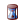

Параметры и
умения
Главная характеристика персонажа - боевой уровень (БУ). Изначально он
равен единице и увеличивается при наборе определенного количества
боевого опыта, который можно получить, выигрывая в боях. Уровень опыта,
необходимый для перехода на следующий уровень, можно узнать из таблицы
опыта.
Боевой уровень влияет на*:
максимально возможное количество существ в
армии, т.о. чем выше боевой уровень персонажа – тем больше существ
можно взять с собой в бой;
уровень боевых существ, т.е. с ростом
боевого уровня персонажа, вашу армию будут пополнять более мощные
существа;
способность надевать новые артефакты;
способность читать новые магические
заклинания;
основные параметры персонажа (см. ниже);
максимальную ставку в рулетке (не более
1000 золота на уровень);
персонажи до 3-го уровня не могут
участвовать в торговых операциях, пользоваться личной почтой, а также
писать в разделы форума отличные от "Вопросы и помощь в игре";
у персонажей 1-го уровня скрыты личная
информация и аватар;
персонажи до 6-го уровня не могут вступить
в гильдию воров;
некоторые игровые возможности – например,
лишь с 3-го боевого уровня персонажу становится доступным загс
и рынок. Большинство глобальных схваток (войны за
новые территории, отражение атак на столицу империи и т.п.) также
доступны лишь для старших игроков.
*Данный перечень не является полным и в
процессе развития игры постоянно расширяется.
Помимо боевого уровня, все персонажи в
игре обладают четырьмя основными параметрами: нападение,
защита, сила магии, знания и тремя дополнительными: удача,
боевой дух, инициатива. Эти параметры у каждой фракции
изначально различны и имеют следующий вид:
Рыцари: защита +1
Рыцари света:
знания +1
Некроманты: знания +1
Некроманты-повелители
смерти: знания +1
Маги: знания +1
Маги-разрушители:
знания +1
Эльфы: инициатива +3%
Эльфы-заклинатели:
нападение +1
Варвары: нападение +1
Варвары крови:
нападение +1
Варвары-шаманы:
знания +1
Темные эльфы: знания +1
Темные
эльфы-укротители: знания +1
Демоны: нападение +1
Демоны тьмы:
знания +1
Гномы: нападение +1
Гномы огня: знания +1
Степные Варвары: нападение +1
При получении нового боевого уровня, вы сможете увеличить на единицу
один из основных параметров.
Параметры и их значение:
• Нападение 
Влияет на урон ваших отрядов и героя.
• Защита 
Определяет устойчивость ваших отрядов в бою от физических атак
противника. Не распространяется на действие магического урона.
• Сила Магии
Параметр, влияющий на эффективность применяемых заклинаний. Т.о. чем
выше сила магии у персонажа, тем выше будет магический урон, время
действия заклинания, количество воскрешаемых существ у некромантов и
т.п.
• Знания 
Параметр, определяющий максимальное количество маны у персонажа.
Единица знаний увеличивает ману на 10.
• Удача 
Чем больше этот параметр, тем выше вероятность нанесения противнику
двойного урона в бою. Удача может быть и отрицательной - в этом случае
урон может быть вдвое снижен. Удача может сработать у любого
существа.
• Боевой дух
Определяет шанс отряда получать ходы чаще, чем должно быть при текущей
инициативе, или наоборот, пропускать ходы. Влияет только на живых
существ.
• Инициатива 
Параметр, влияющий на первоочередность ходов ваших боевых отрядов в
бою.
И, наконец, у персонажа есть умения
фракций, которые изначально также равны нулю и улучшаются в
процессе роста персонажа. Аналогично параметрам персонажа, умения
фракций размещены на стартовой странице и отображают навыки вашего
героя в каждой фракции. Умения фракций начисляются в боях даже в случае
поражения.
Умения фракций влияют на*:
боевые характеристики ваших отрядов,
см.таблицу
опыта;
урон, наносимый вам в бою игроками этой же
фракции - каждый уровень умений снижает урон на 3%;
уникальные умения фракций;
умения гильдий.
*Данный перечень не является полным и в
процессе развития игры постоянно расширяется.
|
|
|